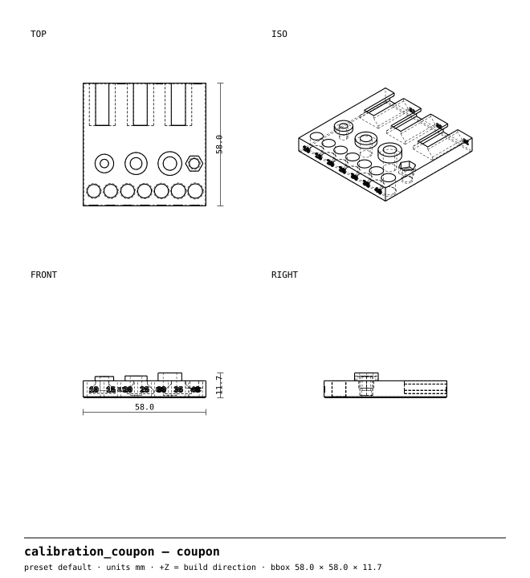
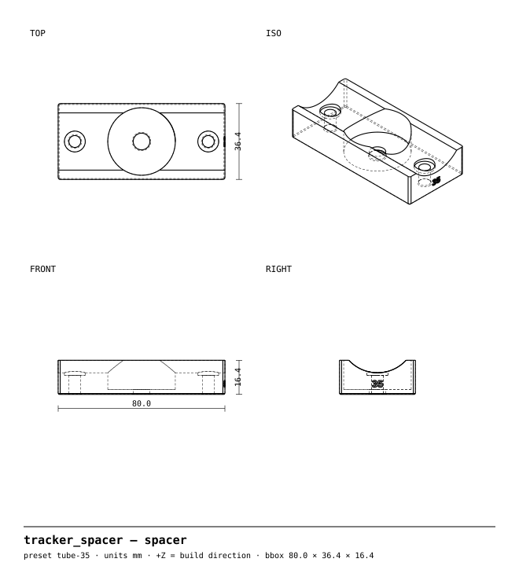
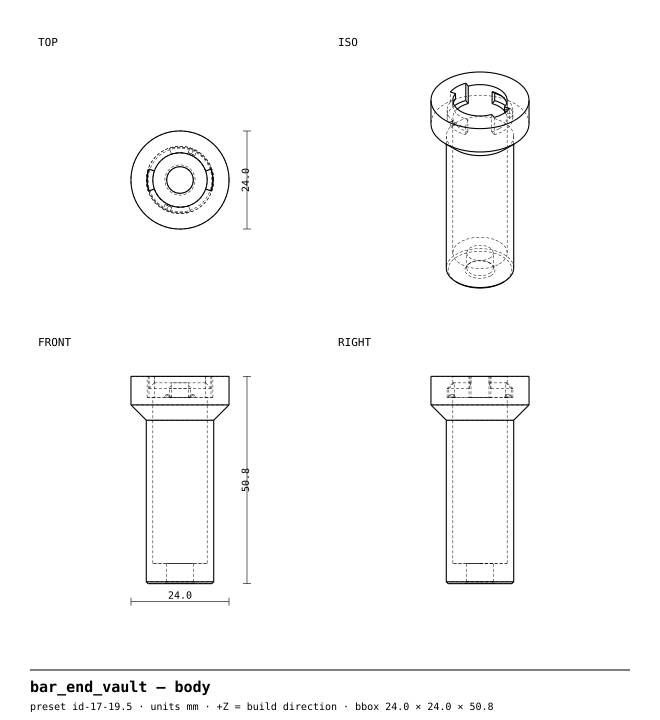
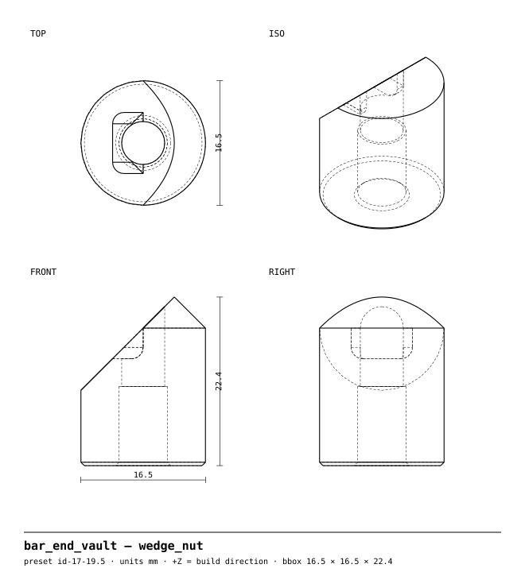
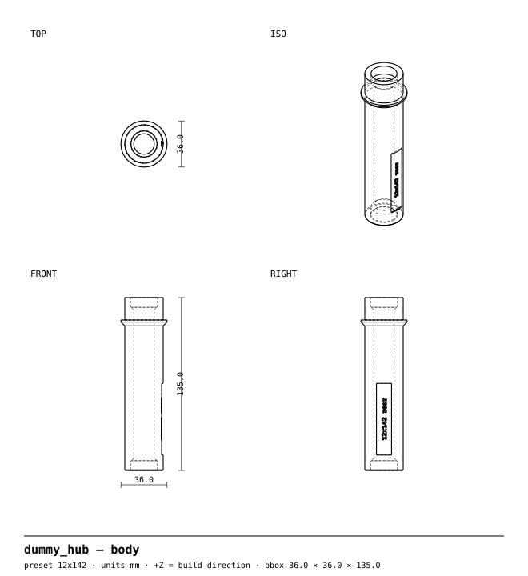
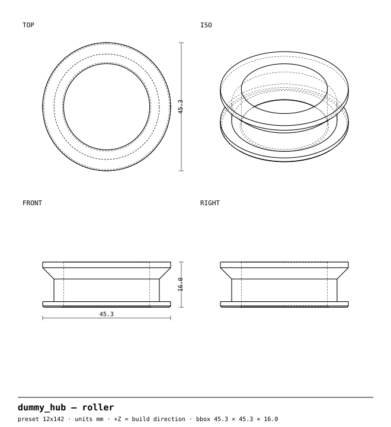

University Bikes
November 7, 2026 · Working draft
We describe bikeparts, an open-source library of bicycle accessories that print on any common 0.4 mm-nozzle printer in PETG without support material. Each part is one parametric source file that produces every size variant, together with STEP/STL/3MF exports, dimensioned drawings, slicer-measured filament and time, and a generated README. Every exported body passes an automated geometry suite (watertightness, bed fit, overhang, minimum wall, horizontal-hole shape), and parts that carry a clamp load are screened by finite-element analysis against a safety factor of 3 after a 0.5 knockdown for layer adhesion. The first release contains four parts: a calibration coupon that measures a printer's real fits, a hidden AirTag spacer for the bottle cage, an expanding bar-end plug that stores a tubeless repair kit, and a shop dummy hub that holds the dropouts and runs the chain with the wheel out. The automated suite passes on all 42 exported bodies. The FEA screen of the bar-end plug forced five design changes. Physical testing is the remaining gate.
Keywords: additive manufacturing, PETG, parametric CAD, design for printing, bicycle accessories, finite-element screening
Most printable bike parts online are single meshes for one frame size, printed with supports, and never checked for load. A shop that fits many bikes needs the opposite: one model per accessory that regenerates for every tube diameter or axle standard, prints first time on whatever printer is to hand, and comes with an honest statement of what it has and has not been tested for.
The library's scope is deliberately narrow. It covers accessories only: nothing in the rider's primary load path (stems, bars, seatpost heads, cranks, pedals, brake levers, star nuts, derailleur hangers). The worst-case failure of any part here is losing the accessory, not control of the bike. Interface dimensions taken from proprietary products (quarter-turn mounts, brake pads) are never estimated; parts that need them wait for caliper measurements.
Fifteen rules govern every part (Table 1). The print-friendly rules make the parts printable on an untuned printer; the structural rules account for the fact that a printed part is anisotropic, with layer interfaces at roughly 30–60% of in-plane strength. Where a rule can be checked by machine it is enforced in the test suite. A part that breaks one must carry a written exception in its README.
| Print-friendly | Structural |
|---|---|
| Zero supports; overhangs ≤ 45°, bridges ≤ 10 mm | Orient for the load path: main stress runs along the layers |
| Teardrop tops on horizontal holes over 3 mm | Split clamps, not printed full rings |
| Walls in nozzle multiples (1.2, 1.6, 2.0, 2.4 mm) | Metal carries clamp force (heat-set inserts or captive nuts) |
| 0.4–0.5 mm chamfer on bed-contact edges | ≥ 1.0 mm fillet on load-bearing inside corners |
| Clearances as named, tunable parameters | Ribs over thickness |
| Fits a 220 × 220 mm bed | 70 °C heat floor (no PLA on the bike) |
| Text debossed 0.4 mm on vertical faces | Safety factor ≥ 3 after a 0.5 interlayer knockdown |
| Fail-safe failure mode where possible |
Geometry is written in build123d (OpenCascade) with each part returned already oriented for printing, its flat face on Z = 0. Clearances live in a single tolerance file; hardware, axle and bar standards, and materials are typed records, each with a source citation and a verified flag. A build step exports every preset, slices it with the PrusaSlicer command line against a generic 220 mm printer profile (0.20 mm layers, three perimeters, 30% gyroid) to measure grams and print time, renders four-view drawings, and regenerates each part's README. Nothing in the output folder is edited by hand.
A part advances through three gates.
Every printer prints holes slightly small and pegs slightly large. Rather than publish clearances tuned for one machine, the library ships a coupon (§ 3.1). The user records which features fit, and a calibrate command writes the measured clearances back into the tolerance file. Every part then regenerates with that printer's numbers.
Table 2 summarises the first release; the subsections give the problem each part solves and the idea that distinguishes it. All rigid bodies are PETG (glass transition ≈ 80 °C, above the 70 °C parked-car floor); TPU appears only as an optional pad.
| Part | Presets | Pieces | PETG | Time | Hardware |
|---|---|---|---|---|---|
| Calibration coupon | 1 | 2 | 26 g | 2 h 43 m | M3/M4/M5 inserts, M4 nut + bolt |
| Ghost tracker spacer | 6 | 1 + pad | 22 g | 2 h 11 m | 2 × M5 × 25, AirTag |
| Vault bar-end plug | 2 | 4 | 14 g | 1 h 29 m | M5 × 40, M5 insert, M6 washer |
| Shop dummy hub | 8 | 3–4 | 65 g | 6 h 21 m | none (bike's own axle) |
Problem.Clearances guessed for someone else's printer make press fits loose and slides stick.
Approach.One 58 mm plate carries every fit the library uses (Figure 1): a ladder of vertical holes from +0.10 to +0.40 mm, M3/M4/M5 heat-set insert bosses, an M4 captive-nut pocket, and three dovetail slots at 0.15, 0.25 and 0.35 mm clearance. A matching key carries a reference peg, horizontal teardrop holes of Ø3, 5 and 8 mm, and a dovetail rail. Twenty-six grams of filament calibrates every part that follows.

Problem.Visible trackers get removed by thieves, and the well-hidden locations (steerer, seat tube) are expensive or sit next to safety-critical parts.
Approach.An 11 mm spacer sits between the frame and the bottle cage on the standard 64 mm bosses (Figure 2). The AirTag pocket faces the tube, so the tag is sealed between spacer and frame: nothing shows from outside, and a thief must remove both cage and spacer to find it. The saddle is generated for six tube diameters (28.6–50 mm), and longer M5 × 25 cage bolts (security Torx optional) replace the stock ones. The spacer is loaded only in compression across its layers, the direction in which layers are strong, and an optional TPU pad protects the paint.

Problem.Open bar ends are an injury hazard, push-in plugs fall out, and a tubeless repair kit is no use if it's left at home.
Approach.A stem-style double wedge locks the plug inside bars of 17 to 21.5 mm inside diameter (two printed sizes from one source file). Tightening one M5 bolt drives two 45° wedges apart against the bar wall. The hollow core behind a quarter-turn bayonet cap, held by a detent, carries tubeless plugs and a reamer (Figure 3). There are no printed threads and no flexing fingers: every printed piece works in compression or in-plane shear, and the bayonet groove and lip are rings in the layer plane.


Problem.Bikes shipped without wheels arrive with crushed fork blades and bent rear triangles; with the rear wheel out, the chain flops, scratches the frame and cannot be cleaned.
Approach.One parametric body per axle standard (QR 100/130/135; thru-axle 12×100, 15×100, 15×110, 12×142, 12×148), clamped by the bike's own skewer or thru-axle, so it is exactly hub-width and cannot fall out of the box. Rear versions carry a free-spinning roller with the root diameter of an 11-tooth cog, placed where the smallest cog sits: back-pedal to wash the chain with the wheel out, and the derailleur stays tensioned in transit (Figure 4). Swap-in end inserts carry the axle-specific detail, and each standard is debossed on the body. The body prints standing up so the clamp and crush loads press the layers together.


All 42 exported bodies across 17 presets pass all five checks, 210 of 210. The suite caught real defects during development that visual inspection had missed, including pad ends and a hub collar rim below the 1.2 mm wall minimum, an insert seated 0.5 mm too deep, a bayonet detent too small to hold, and coupon bosses whose union with the plate silently refilled their insert pockets. Each was fixed in the geometry, not waived.
The bar-end plug is the only part carrying a clamp load. Its pieces are meshed with quadratic tetrahedra (gmsh) and solved with scikit-fem using an algebraic-multigrid preconditioner. Contacts are modelled as normal-direction springs plus load-free 3-2-1 pins rather than clamped faces, which create false stress peaks. Because peaks at the edge of an idealised load grow without bound as the mesh is refined, the governing von Mises stress σgov is taken more than 1.5 mm from any loaded or supported face, and bearing pressure pb is checked separately. The safety factor is
with σt = 45 MPa, the typical in-plane tensile strength of PETG. Three load cases are run: bolt preload at 0.3 N·m, the insert pulling on the threaded wedge, and a 200 N side blow.
The screen forced five design changes (Table 3). The last finding, a sharp inside corner beside the bolt hole, broke rule 4. With a 1.5 mm fillet, the insert-pull case converges to SF 4.4: 0.8 mm and 0.55 mm meshes agree within 3%. Preload and side-blow cases gave SF 5.7 on a 0.8 mm mesh. The full run on the final 0.55 mm refined mesh is still to be repeated after the last change.
| Finding | SF before | Change |
|---|---|---|
| Washer bearing on the floor | 2.1 | M6 washer (Ø12 × 1.6) on the M5 bolt |
| ≈ 2.3 mm roof over a captive nut | 0.7 | Threaded wedge's short side 3 → 10 mm |
| Hex-nut face crushing PETG in bearing | 1.3 | M5 heat-set insert instead of a nut |
| Sharp inside corner beside the bolt hole | ≈ 2.5 | 1.5 mm fillet → SF 4.4 |
| Stress scales with preload | — | Torque 0.5 → 0.3 N·m (≈ 180 N grip remains) |
The tracker spacer (pure compression), the dummy hub (clamped along its print axis) and the coupon carry no load case that needs FEA.
Source, drawings and generated exports are at github.com/neuropathogens/bikeparts. Part designs are licensed CERN-OHL-S-2.0, code Apache-2.0, and documentation and drawings CC-BY-SA-4.0. Copyright © 2026 Paul Wang. These are accessories, supplied without warranty.